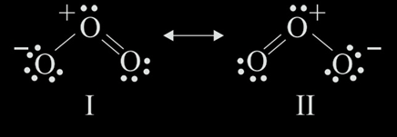

In order to write these structures, we first need to understand what they represent. Well, Lewis Dot Structures or Lewis Electron Dot Structures (LEDs) - yeah, I know it sounds funny - are simplified depictions of the bonds between atoms in a molecule. The 'dots' represent the electrons located in the outer shell of the atom and the lines depict the bond that is created between them. To be more exact, a single line represents 2 shared electrons, or a simple sigma bond, two lines connecting two atoms represent a double covalent bond and three lines - a triple covalent bond.
Firstly, it's important to know how to write the configuration of a singular atom, so that we can then build bonds with other ones. Around the symbol of the chemical element, we draw dots that represent the valence electrons (the ones situated in the outer shell). For example, boron has a \(ns^2np^1\) electron configuration, therefore it has 3 valence electrons, being situated in the 13th group of the Periodic Table. Fluorine is a halogen, therefore it has an \(ns^2np^5\) configuration (7 valence electrons).
When a bond is created, electrons are shared by the two atoms that make up the bond. How do you know what kind of bonds are created? Well, it depends on how many electrons they need in order to have a stable configuration (\(ns^2np^6\)).
Let's study the structure of \(\ce{CO2}\):
Carbon has a \(ns^2np^2\) configuration, therefore 4 valence electrons; oxygen: \(ns^2np^6\) (6 valence electrons). In this case, the carbon atom establishes two double bonds, one with each oxygen atom. Thus, two electrons from each oxygen atom are involved in the bond with two lone pairs of electrons in each oxygen atom, that are represented by dots. Carbon however has no lone pairs.
Resonance structures are various ways of representing structures for the same molecule or ion, depicting different ways of writing the bonds or the charges of atoms. None of them shows the actual real structure of the molecule, but they make the complex structure easier to understand.
Let's take a look at the \(O_3\) (ozone) structure. In this molecule, one of the oxygen atoms creates a double bond with another oxygen atom. This way, each of the two oxygen atoms will have two lone electron pairs. Now, one of them will have to create a bond with a third atom of that kind. Here's where things start getting interesting: one oxygen atom will "donate" one of its lone pair electrons to the oxygen atom with six valence electrons, so it can achieve a stable configuration. This is why the donor (one oxygen atom) will have a positive charge, while the acceptor (the other oxygen) will have a negative one.
We can either write the bond by writing a "+"" above one of the atoms, signifying the positive charge and a "-"" above another one, signifying the negative charge.
In the figure below, the \(\leftrightarrow\) shows that the two structures are resonance structures, with the "-" charge located on one atom. This makes the structure easier to understand and explain, but it is not the real structure, as the "-" charge is evenly distributed between the two lateral oxygen atoms.
Another way of writing it depicts the case in which the electrons are evenly distributed between the two bonds created. That's why, instead of drawing a single bond and a double bond, we'll write a normal line and a dotted line, representing the even distribution of electrons between the two bonds. Those lines basically signify 1.5 bonds (something between a single bond and a double bond). Therefore, we can also write a "+"" above the atom that makes two bonds and a "\(-\frac{1}{2}\)" above the other two oxygens, signifying the partial negative charges.
You can find out more about types of bonds in the following chapters, such as "Polarity of Bonds"!
Written by Maria Mustatea